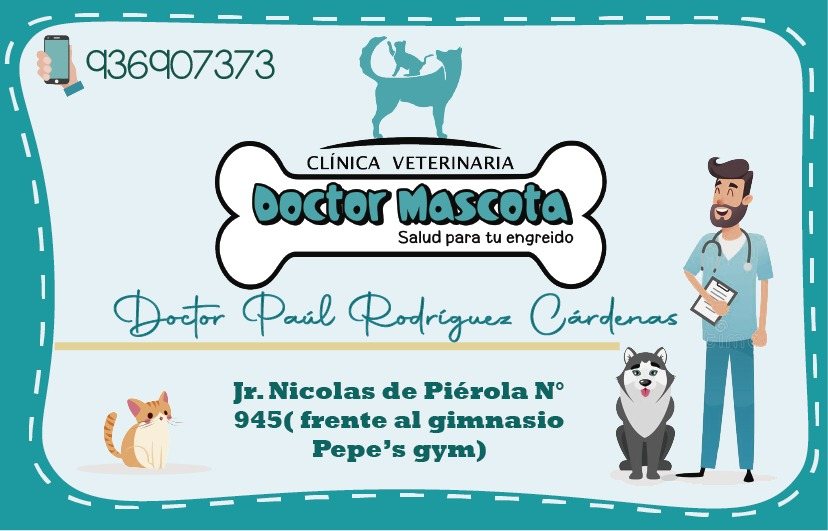

Clinica Veterinaria Doctor Mascota
Somos una clínica veterinaria multidisciplinaria que ofrece diferentes especialidades, que no solo nos conformamos con tener al día su control médico o alimentarlo con comida más especializada contamos también con los servicios de peluquería, baño y spa, tratamientos de belleza y salud, alimentos nutritivos para cada especie respecto a su edad y atención de enfermedades y partos.
el amigo para tu peludo
Las mascotas ayudan a las personas a abrir su corazón y a ser capaces de expresar sus sentimientos. Además de esto, también son de gran ayuda para adquirir hábitos que beneficiarán nuestra salud, ayuda a evitar o reducir la depresión, ya que, a través del cuidado, las personas que están solas activan su vida social y se sienten útiles, aumentando su responsabilidad y reduciendo la ansiedad, además, con un animal siempre se socializa
Al acariciar y jugar con la mascota, se genera una paz interior y tranquilidad muy buena para la salud del corazón. El vínculo que se puede llegar a crear entre una persona y su perro, puede ser tan fuerte que el animal detecte el estado de ánimo de su dueño, proporcionando más cariño al cuidador cuando esté triste